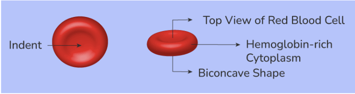
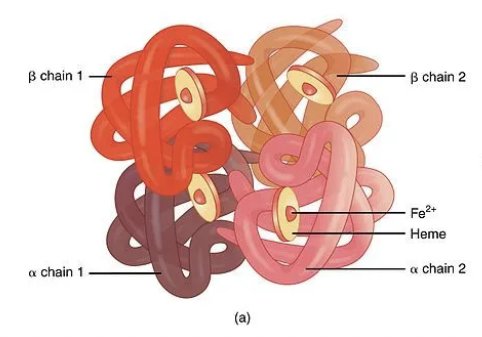
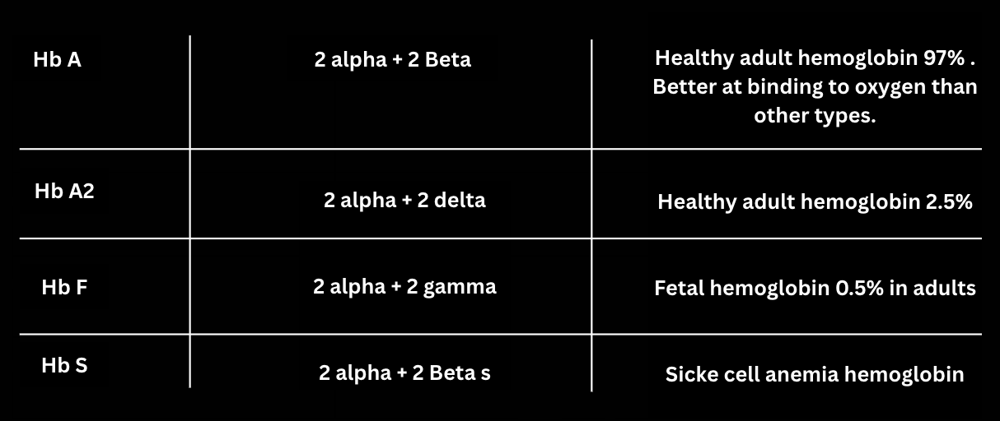
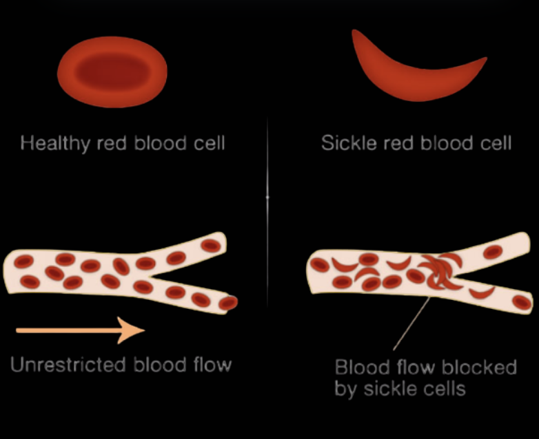

Blood: specialized connective tissue, circulating throughout the vascular system, performing numerous vital functions for maintaining homeostasis.
Components of Blood:
Blood is broadly divided into two main components:
- Blood is broadly divided into two main components:
- Formed Elements: Cellular and cell-fragment components suspended in plasma, accounting for about 45% of blood volume.
- Plasma: The extracellular matrix, a yellowish fluid constituting approximately 55% of total blood volume. It's largely water (around 92%) and serves as the medium for transporting various substances.
Formed Elements:
Erythrocytes (RBCs - Red Blood Cells):

- Biconcave discs, without: ribosomes, mitochondria, endoplasmic reticulum, golgi apparatus, and (in mammals) nucleus.
- Their flexibility allows passage through narrow capillaries.
- Lifespan approximately 120 days.
- Contain hemoglobin, a metalloprotein that reversibly binds oxygen and carbon dioxide.

Hemoglobin
A quaternary protein, with four peptide chains, each bound to a heme group. There are 3 main healthy types of hemoglobin, each with a different arrangement of the 4 main peptide chains: α, β, γ, and δ.
Fetal haemoglobin is present before birth, and after birth it is gradually replaced by HbA and HbA2 in healthy adults. In people suffering from thalassemia, there is either a lack of α-chains (alpha thalassemia) or β-chains (beta thalassemia), and HbA and HbA2 respectively are not synthesized properly. In beta thalassemia, there is less or no HbA, and more HbA2 and HbF to compensate. Alpha thalassemia is much more dangerous because alpha chains are needed for every hemoglobin.
In sickle cell anemia the 6th amino acid in the β-chains, glutamic acid, is mistakenly replaced with valine. The result is the formation of βs-chains and HbS, that have irregular shape and cause the RBCs to be deformed and take the shape of a sickle. For this reason, it's easier for RBC containing the HbS to clot, making it difficult to transport oxygen.

Leukocytes (WBCs - White Blood Cells):
- Crucial components of the immune system, providing defense against pathogens and foreign invaders.
- Possess nuclei and organelles.
- Categorized into two main groups based on cytoplasmic granules:
- Granulocytes:
- Neutrophils: Phagocytic, primary responders to bacterial infections.
- Eosinophils: Involved in allergic reactions and parasitic infections.
- Basophils: Release histamine and heparin to mediate inflammatory responses and allergic reactions.
- Mast cells: release histamine and are involved in allergic reactions.
- Agranulocytes:
- Lymphocytes: Key players in specific immunity (T cells, B cells, NK cells).
- Monocytes: Differentiate into macrophages in tissues, performing phagocytosis.
- Dendritic cells: antigen presenting cells, recruit and activate T cells.
Thrombocytes (Platelets):
- Small, anucleated cell fragments derived from megakaryocytes.
- Essential for hemostasis (clotting mechanism).
- Form a platelet plug at sites of vascular injury.
Blood Types - The ABO and Rh Systems:
- Determined by the presence or absence of specific antigens on the surface of erythrocytes.
- ABO System:
- Based on A and B antigens.
- Four main types: A, B, AB, O.
- Presence of corresponding antibodies in plasma against absent antigens (e.g., Type A blood has anti-B antibodies).
Rh System
- Determined by the presence or absence of the Rh factor.
- Rh-positive (Rh+) or Rh-negative (Rh-).
- Clinically significant in transfusions and pregnancy (hemolytic disease of the newborn).

Chemical Composition of Blood Plasma:
Plasma is a complex solution containing a multitude of dissolved substances vital for physiological processes.
- Organic Compounds:
- Proteins: Antibodies, globulins, fibrinogen etc.
- Nutrients: Glucose, amino acids, fatty acids, vitamins.
- Metabolic Wastes: Urea, creatinine, uric acid.
- Hormones: Chemical messengers transported to target cells.
- Inorganic Components:
- Ions (Electrolytes): Maintain osmotic pressure, pH balance, and are crucial for nerve and muscle function: Na+, K+, Ca2+, Mg2+, Cl-, HC03- PO43-
- Minerals: important for enzymatic activity and other physiological roles, e.g., Fe, Cu, Zn.
Important Functions of Blood:
- Regulation of Body Temperature: Blood distributes heat throughout the body.
- Clotting: Blood clots in case of injury to stop bleeding
- Regulation of pH: Bicarbonate buffer system, plasma proteins, and phosphate buffers help maintain physiological pH.
- Protection: Leukocytes provide immunity; clotting factors prevent hemorrhage.
- Transport: O2, CO2 (mainly as bicarbonate ions), nutrients, blood transports hormones, waste products.
Written by Alexandros Samoutis